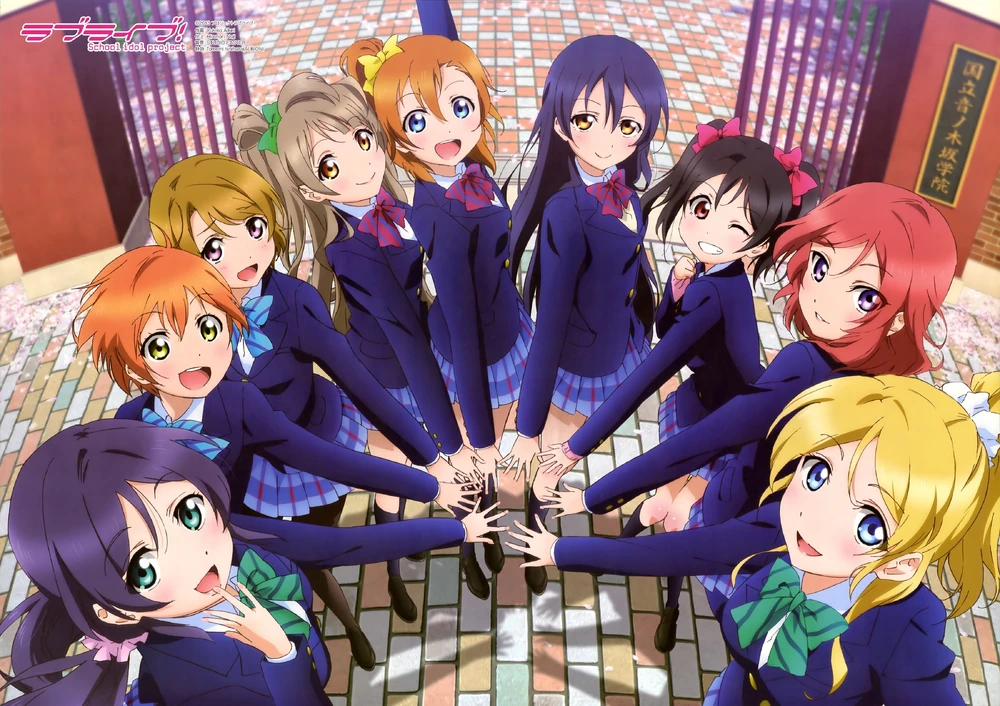
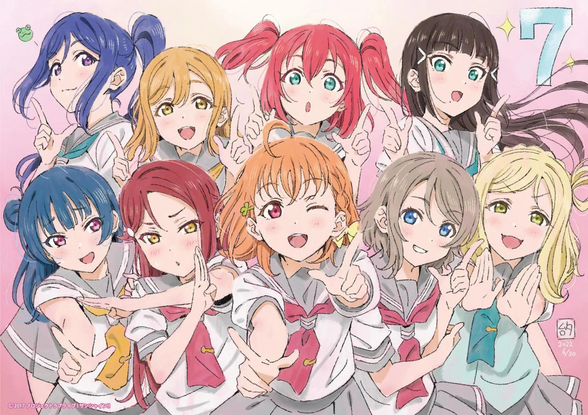
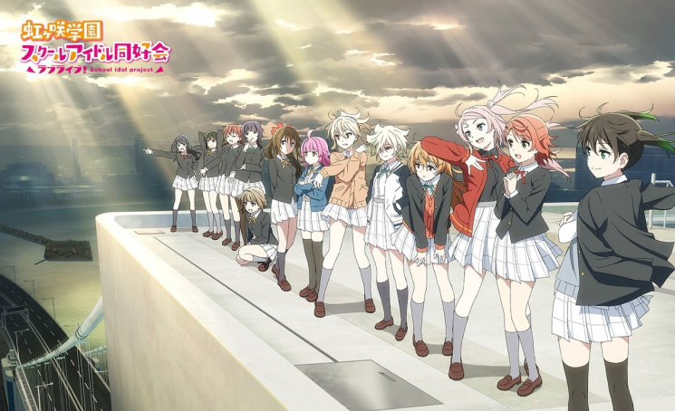
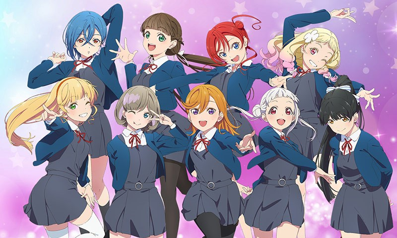

µ's
Membras: Kousaka Honoka, Sonoda Umi, Minami Kotori, Yazawa Nico, Hoshizora Rin, Koizumi Hanayo, Nishikino Maki, Toujou Nozomi, Ayase Eli
Aqours
Membras: Takami Chika, Matsuura Kanan, Watanabe You, Kunikida Hanamaru, Kurosawa Ruby, Sakurauchi Riko, Kurosawa Dia, Tsushima Yoshiko, Ohara Mari
Nijigasaki Gakuen
Membras: Takasaki Yu, Uehara Ayumu, Konoe Kanata, Miyashita Ai, Nakasu Kasumi, Asaka Karin, Yuki Setsuna, Ousaka Shizuku, Tennouji Rina, Verde Emma, Mia Taylor, Mifune Shioriko, Zhong Lanzhu
Liella!
Membras: Shibuya Kanon, Arashi Chisato, Tang Keke, Heanna Sumire, Hazuki Ren, Onitsuka Natsumi, Sakurakouji Kinako, Yoneme Mei, Wakana Shiki